Political genocide and stigmatization of Viotá’s agrarian movement
> Editorial design
 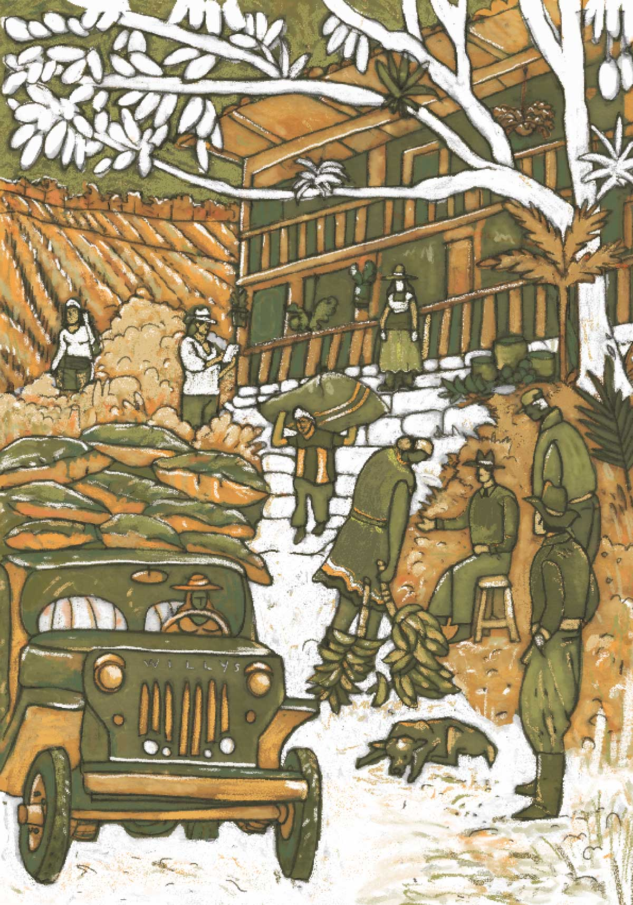
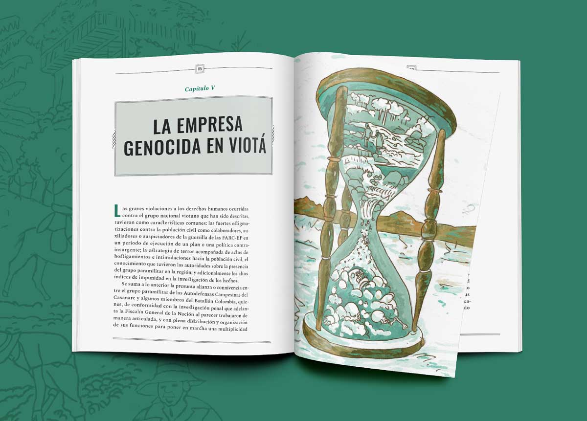
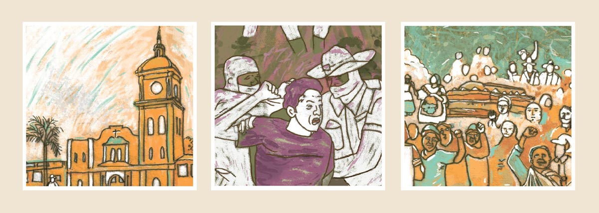
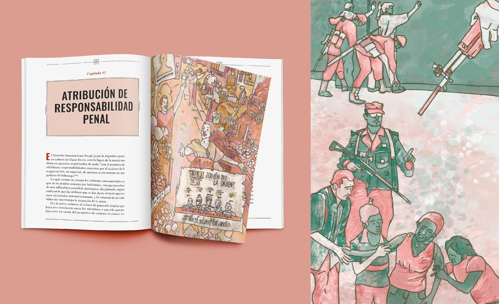
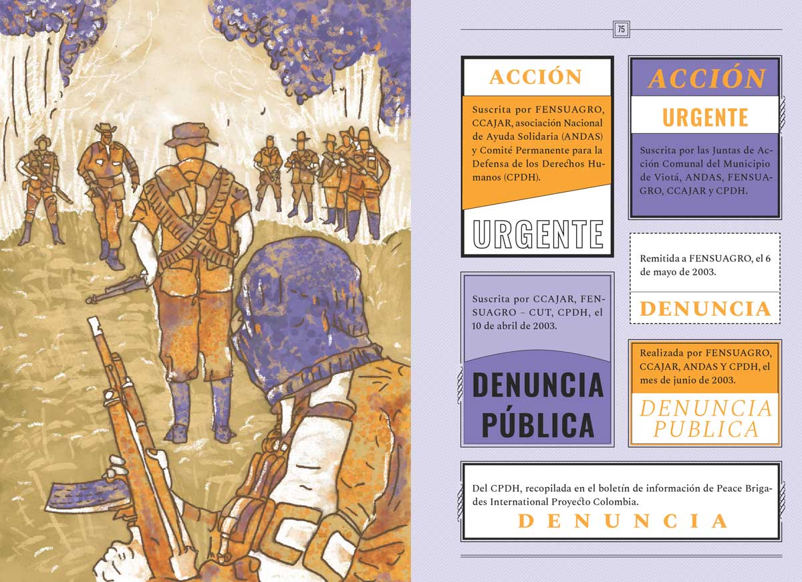
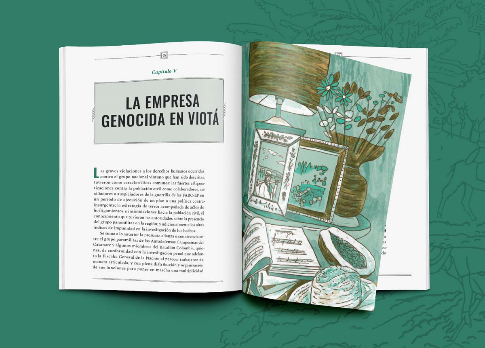
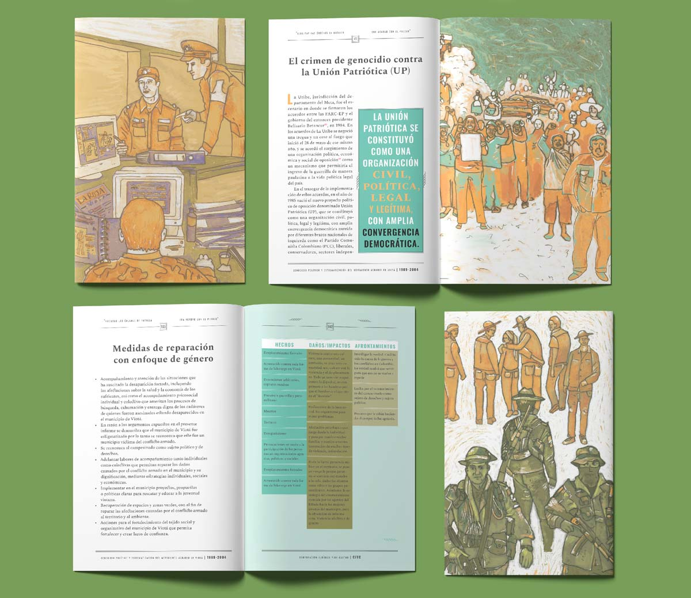
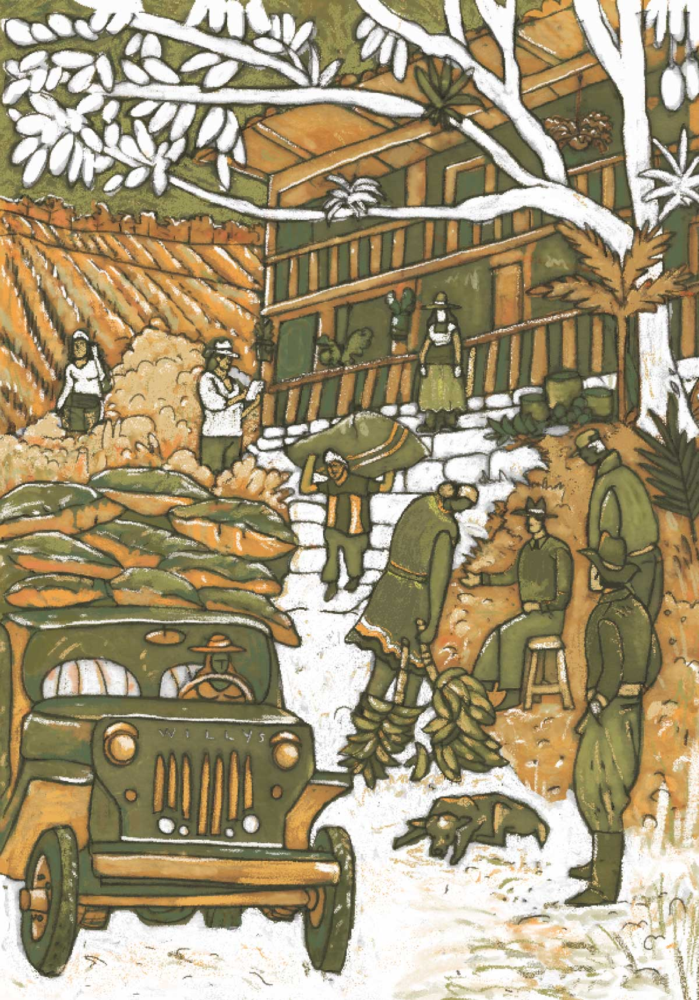
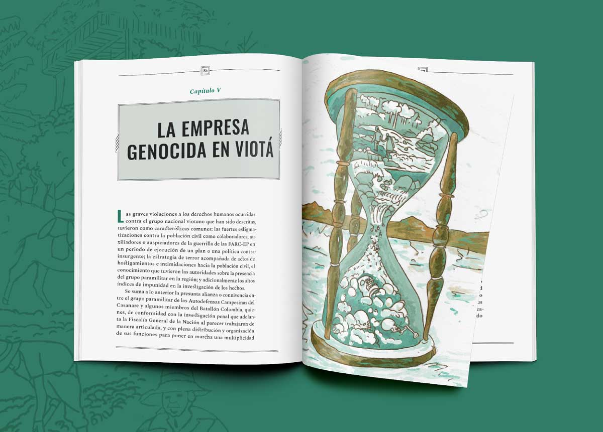
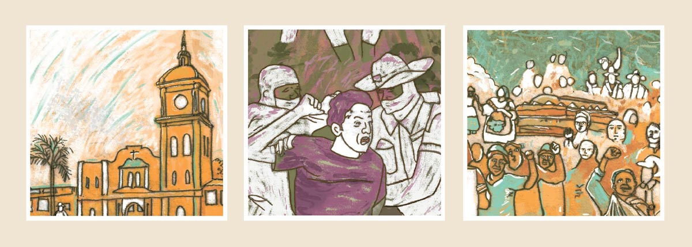
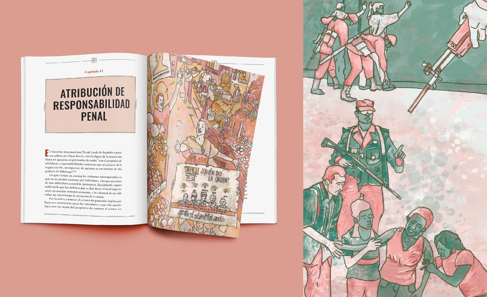
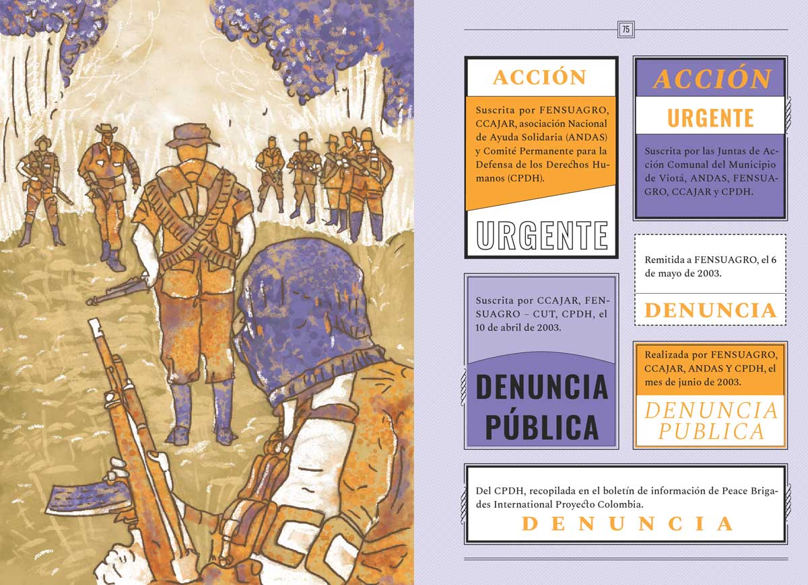
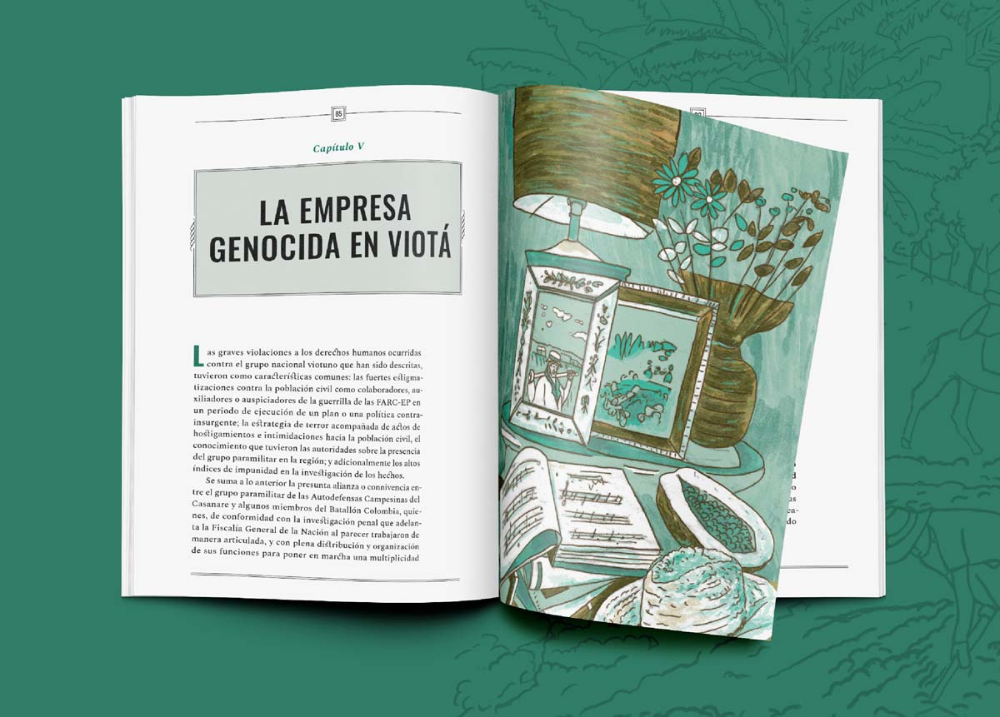
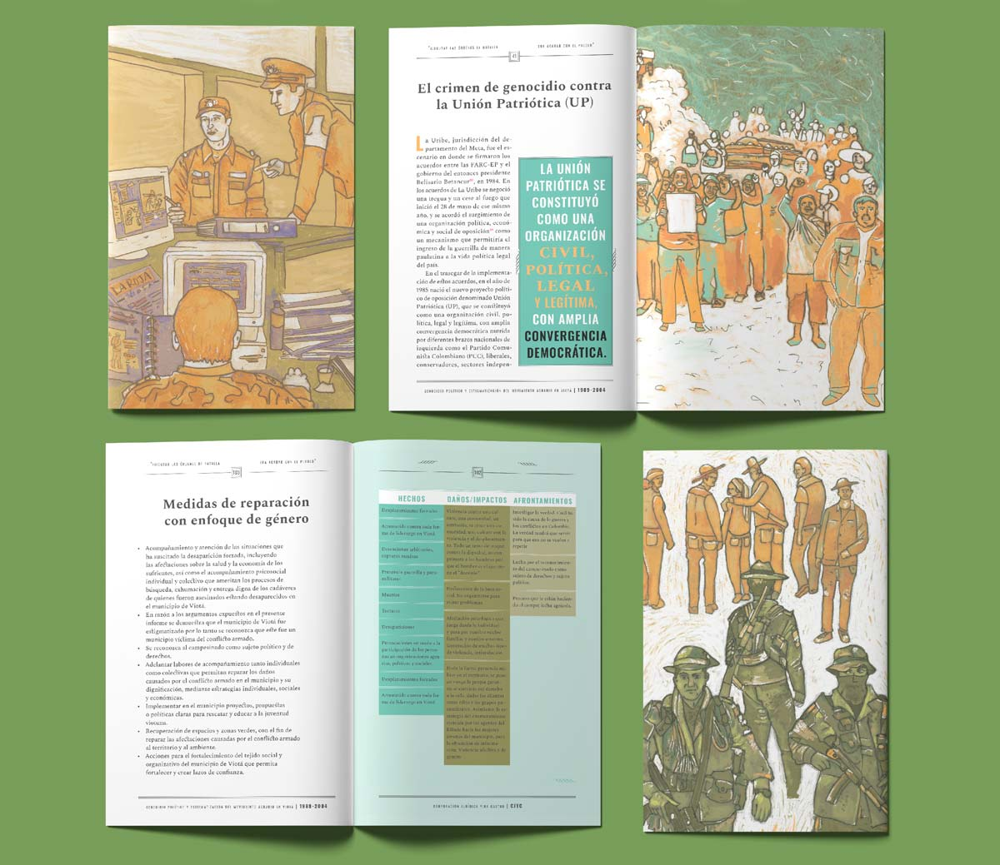
About the project
We were commissioned to conceptualize, illustrate, and design the Report for the Special Jurisdiction for Peace (JEP) "Genocide and Stigmatization of the Agrarian Movement in Viotá 1989-2004." The report is a journey through memory, presenting factual accounts of the events that occurred during that period. Working closely with the Corporation, we traced the historical line and visually depicted the crimes committed against the civilian population through illustrations.
As we worked, we often wondered, "Who gave the order?" Using the information we gathered, we visually captured the significant scenes that depict the stigmatization, oppression, and extermination experienced by the agrarian movement in this area of Cundinamarca, Colombia.
Technical information
Client: Corporación Jurídica Yira Castro —CJYC
Year: 2021
Delivered products: 1 book.